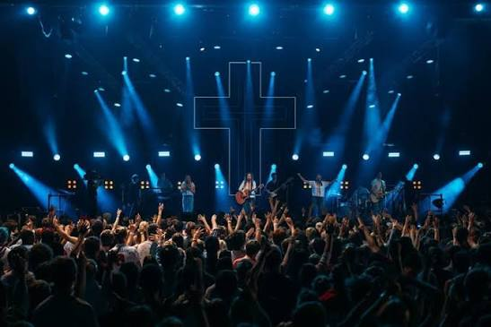

Our Daily Bread
Our Daily Bread is a daily devotional that provides spiritual insights and reflections based on biblical teachings. My favorite parts are the daily verse photos you can send to people and the audio reading so you can listen to it as you read along.
Visit Our Daily Bread
2BeLikeChrist
2BeLikeChrist is a youtube channel and website run by Luke and Megan Taylor. They have great chapter by chapter studies of the Bible and the application section at the end is particularly good.
Visit the 2BeLikeChrist website and 2BeLikeChrist YouTube channel
SU Scotland Holidays
SU holidays are a great way to learn about the bible, felowship with other young believers, worship and have a great time.
Learn more about SU Scotland

Music
Music is a great way to worship, hear stories and testimonies and share with others. Here is my playlist if you want to liten to it: Chill Worship. Some of my favorite artists are: